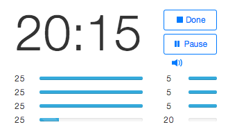
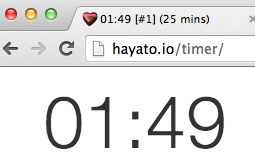
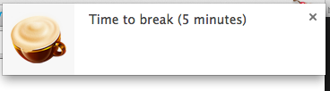
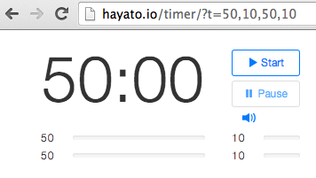
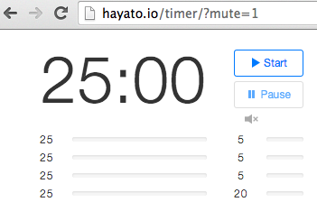
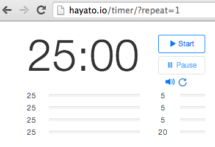

Update (2016-03-22 Tue): I have rewritten the timer application. This document is still using the old screen captures.
I've created a simple timer application for the pomodoro technique. You can use the timer here, https://hayato.io/timer/.

It seems that there are a lot of timer applications for the pomodoro technique, however, I couldn't find any timer which fits me.
I need a simple, tiny, easy-to-customize, non-distractive and web-based timer. Therefore, I made it.
Requirements
- Modern browsers.
Features
-
In addtion of the page, the title of the browser's tab also shows the progress.

-
Desktop notifications with sounds (only if a browser supports).

-
Specialized for the pomodoro technique. Pre-set timers are:
25min5min (short break)25min5min (short break)25min5min (short break)25min20min (long break)
Customize
You can customise the timer by URL's request parameters.
-
t- Comma separated timer periods.Example: http://hayato.io/timer/?t=50,10,50,10
In this case, timers are set to 50 min, 10 min, 50 min and 10 min.

-
mute- Turn the notification off.Example: http://hayato.io/timer/?mute=1

-
autostart- Auto start the timer after the page is loaded.Example: http://hayato.io/timer/?autostart=1
-
repeat- Repeat the timers.Example: http://hayato.io/timer/?repeat=1

-
zen- Enable zen mode. Try it. :)Example: http://hayato.io/timer/?zen=1
You can mix the parameters freely, such as http://hayato.io/timer/?t=50,10,50,10,50,30&autostart=1&repeat=1
Future Plan
-
More customize.
- Sounds, Icons.